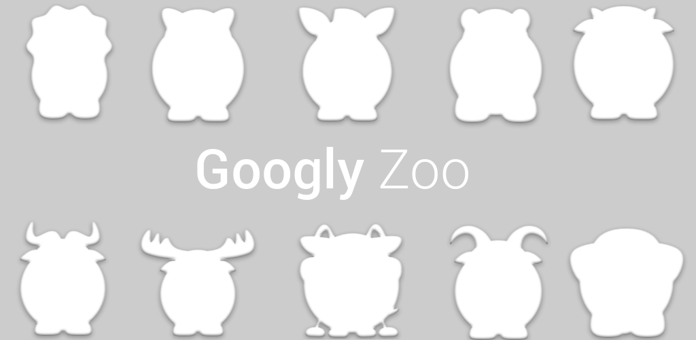

Googly Zoo : a small augmented virtuality open-source project
Googly Zoo is an augmented virtuality experience. Choose your favorite virtual Googly pet and simply move your face in front of your smartphone to wake it up. Once your virtual pet is awake, its Googly Eyes will track you for hours without blinking! Even if your new virtual pet doesn't show any signs of tiredness, it will automatically fall asleep as soon as you disappear from your screen.
Googly Zoo is an head tracking attempt developed to experiment FaceDetection listener. Based on Camera.FaceDetectionListener small changes have been implemented to add simulated head positions between two real detected ones. Due to those simulated values motions of eyes are smoother, especially when lightness doesn't allow continued detection. The drawback is a short delay (100ms) used to perform the animation.
We would be very grateful to have any feedbacks on this open-source project : GooglyZoo on GitHub.